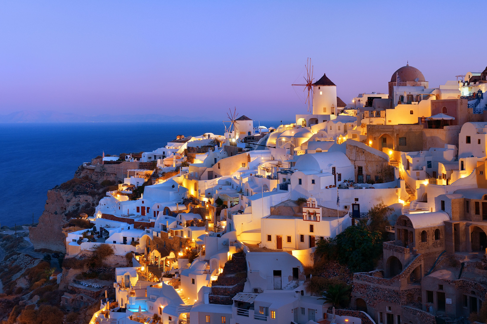

SANTORINI
Santorini, known since ancient times as Thira, is one of the most famous islands in the world. The fact that you can sit in front of the caldera, enjoy local dishes, a drink or a coffee while gazing at the remarkable beauty of an active volcano is priceless. The island is actually a group of islands consisting of Thira, Thirassia, Aspronissi, Palea and Nea Kameni in the southernmost part of the Cyclades.